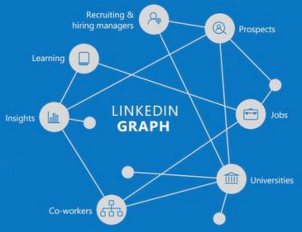
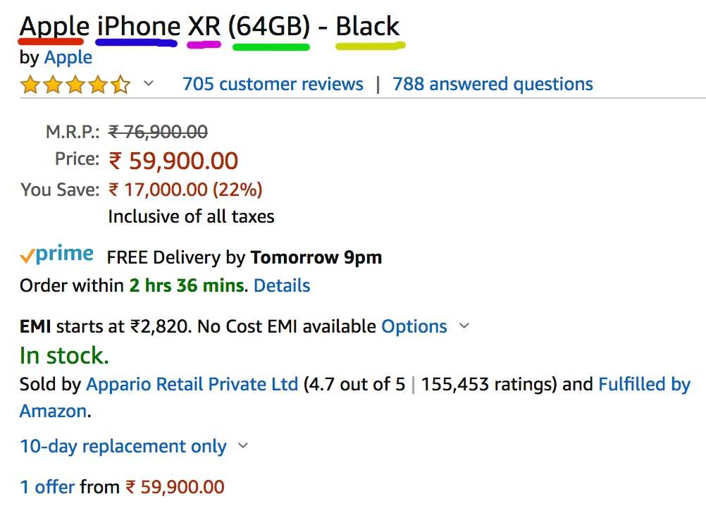
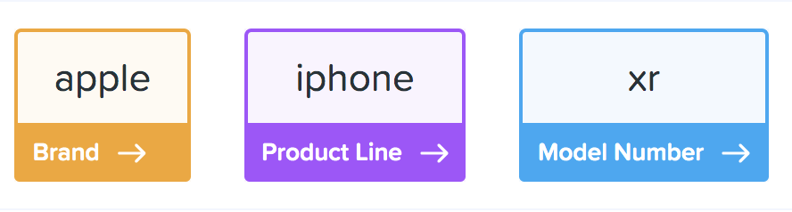
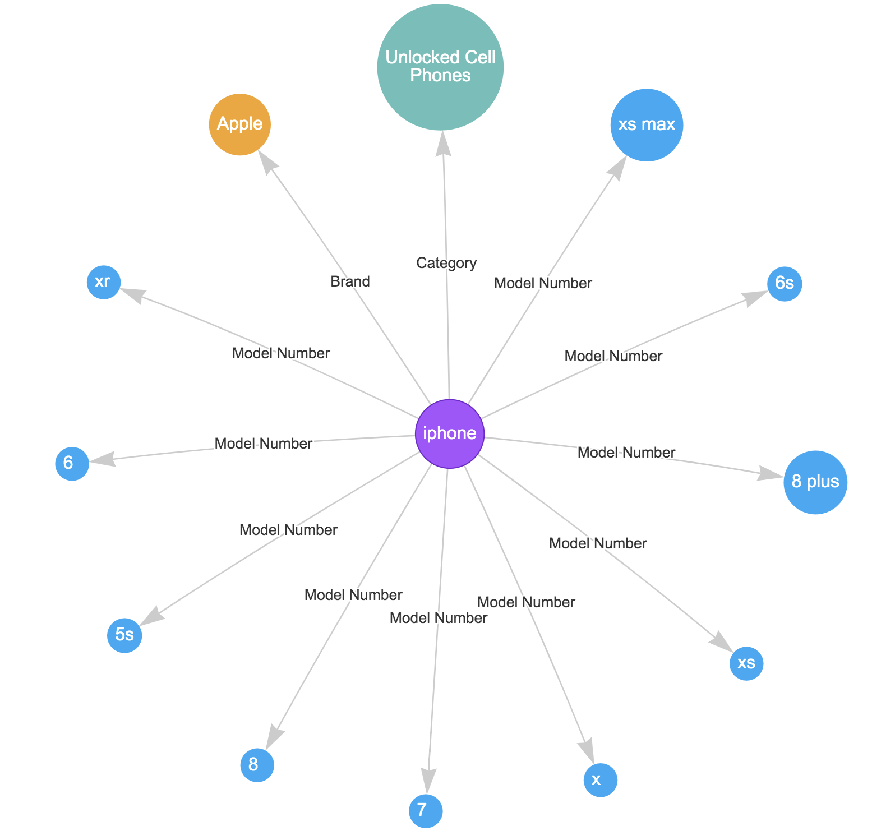

Knowledge graph for better query understanding
About me
Matild Reema
Senior Software Engineer at Avalara
Previously @ Indix
Scala, Akka, Hadoop, Spark
Agenda
Where knowledge graphs are used
What it is
How to build one
Use case - Query understanding
Demo of our product graph
Looks familiar?

Why did we build one?
Catalog of 3B+ products
Unstructured data
-> Structured
-> Search
Simple search was not proving to be sufficient
More meaningful / contextual search
Quick Demo
What does the knowledge graph offer?
Answer
questions
Semantic Search
Recommendation engine
Discover insights
Data -> Knowledge
Let's get into the know-hows
What is it?
Representation of your knowledge domain
Entity => Node
Barack Obama, United Nations
Product domain - Apple, iPhone
Assign semantic types and properties to entities
Semantic types - Person, Organization, Brand, Product line
Properties - Height, Age, Year of founding, Price
Relations between those entities
Bidirectional, Unidirectional
Can have associated weights - confidence
How do I build one?
Identify entities in your domain
Structured data - already has extracted entities
Unstructured data - use NER models to identify entities
tokenize, POS tagging
Classify them into higher level entites
Entities from a product page


Link extraction
Formulate relations based on extracted facts
Unstructured data - Dependency parsing and pos tagging
Representation of connected data :
RDFs(Triples) -
subject, predicate, object
<Apple>
:hasProductLine
<iPhone>
Property graphs -
key / value associated with entities and relations

Link prediction
Can I predict the next most likely links?
Based on graph structure
Proximity measures
Common Neighbours, Preferential Attachment
Probabilistic models
Use node attributes in addition to network structure
Using the knowledge graph
"Semantic" Search
Determine searcher's intent
Match meaning not words
Knowledge of context
Query Segmentation
Tokenize to get the right intent
E.g:
men's
running shoes
Query tagging
Map query segments to entities in the graph
E.g:
men's
running shoes
gender
itemType
Query Rewriting
Query Expansion
Adds additional terms like synonyms
Query Relaxation
Remove query terms
Related Search Suggestion
Explore your relations
Complementary - Product vs accessories
Competiting - Brand
X
vs Brand
Y
Demo
Questions?
Bonus
Why not use tables?
Lose dimensionality
Better visualization with graphs
Leverage all the work done on graph analysis